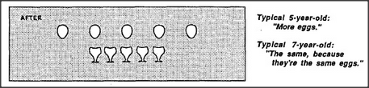
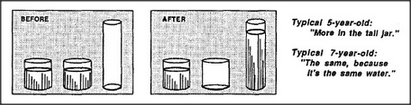

The psychologist Jean Piaget was one of the first to realize that watching children might be a way to see how mind-societies grow. In one of his classic experiments, he showed a child two matching sets of eggs and cups — and asked, Are there more eggs or more egg cups?

Then he spread the eggs apart — before the child's eyes — and asked again if there were more eggs or more egg cups.
One might try to explain this by supposing that older children are better at counting. However, this can't explain another famous experiment of Piaget's, which began by showing three jars, two filled with water. All the children agreed that the two short, wide jars contained equal amounts of liquid. Then, before their eyes, he poured all the liquid from one of the short jars into the tall, thin one and asked which jar had more liquid now.
These experiments have been repeated in many ways and in many countries — and always with the same results: each normal child eventually acquires an adult view of quantity — apparently without adult help! The age at which this happens may vary, but the process itself seems so universal that one cannot help suspecting that it reflects some fundamental aspect of the child's development. In the next few sections we'll examine the idea of more and show that it conceals the workings of a large, complex Society-of-More — which takes many years to learn.